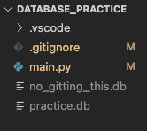
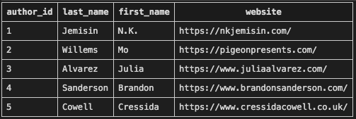

24.7. Database Tips¶
Now that we’ve learned how to crete and interact with a local database, we are ready for some of the finer points.
24.7.1. Close the Connection¶
In each of the examples in this chapter, we start by opening a connection to the database.
database = sqlite3.connect('practice.db')
Once connected, we perform several CRUD operations, and then our programs stop. Each time our programs end, the connection to the database automatically closes.
However, we can easily build a program that uses a loop to keep itself running. Our Flask applications are good examples of this. They wait for user input before executing tasks, but they are always running! If we connect to a database in one of these programs, that connection stays active. This opens up some potential security issues.
To help limit access to the database, one excellent habit is to close the connection immediately after we finish a set of CRUD operations.
The syntax for closing a connection is quite simple:
database.close()
This statement should be placed right after the execution of our SQL queries.
By deliberately closing the connection, the flow for our database interactions looks something like this:
Open a connection to the database.
Execute one or more SQL queries, and use
.commit()as needed.Close the connection.
Every time we access the database, we must re-open the connection, execute our SQL queries, and then close the connection. While it might seem inefficient to continually open and close the database connection, this is the safer option. Access to the data is only available when we need to perform CRUD operations.
This structure also fits well with splitting jobs across different Python functions.
24.7.2. Don’t Track the Database with Version Control¶
Recall that the Git version control system lets us track the changes we make to our projects. Unless we are careful, this includes the database file.
While including the database in a Git repository might seem like a good idea, we must absolutely avoid doing so! Here are two important reasons why:
Over time, the size of the database can become very large. This increases the size of the repository, which makes it more complicated and time consuming to backup.
If the database is part of the repository, it will be visible to anyone who has access to the repo. If we push the repo to GitHub (where saved projects are visible to anyone with a web browser), then we make the contents of our database open for public viewing and download. (This is bad).
To keep our database separate from version control, we need to add its name to
the .gitignore file before we make a commit. (Recall that we used
.gitignore with our earlier Flask projects).
Try It!
Let’s create a new database file and prevent Git from tracking it as part of the repository.
Open your
database_practicedirectory in Visual Studio Code.If you don’t already have one, use the tools in VS Code to create a
.gitignorefile.Open
.gitignorein the workspace and add the name of the database you want Git to ignore.1
no_gitting_this.db
If you have an existing
.gitignorefile, you can add the database name anywhere in the file. The name just needs to be on its own line.Open
main.pyand create the new database file. Its name must match the one in.gitignore.1 2 3
import sqlite3 database = sqlite3.connect('no_gitting_this.db')
Run
main.py. Notice that when the new database appears in the file tree, its name remains gray.Run
git statusin the terminal. Notice thatmain.pyand.gitignoreappear in the output, but not the new database.$ git status On branch main Changes not staged for commit: (use "git add <file>..." to update what will be committed) modified: .gitignore modified: main.py
24.7.3. Add a Primary Key¶
To help mange the data stored in a table, one helpful tool is the primary key. This is an integer assigned to each row in the table, and no two rows have the same primary key.
By adding primary keys, every row in the table will be different from every other row. For example, if we have two students with the same name, their table entries can easily be confused. However, by adding a unique primary key, the two rows no longer look the same.
Example
Without primary keys, we cannot tell the difference between two rows that contain identical values. Primary keys guarantee that every row has at least one unique piece of data.
{kind=link}
When we use the sqlite3 module, we can assign primary keys automatically.
However, we must include some special syntax when we first create the table.
CREATE TABLE table_name (key_name INTEGER PRIMARY KEY, other_columns...)
key_nameis the column in the table that will store the primary keys. Each key value must be an integer data type.We must type out
INTEGERinstead ofINTfor the data type. This is required! UsingINTcauses errors.PRIMARY KEYsets up the process to automatically assign an integer tokey_name. This happens each time a new row is added to the table. We do NOT need to assign a value tokey_nameourselves.Python keeps track of the largest primary key in the table. When a new row is added, its primary key is assigned the next higher value.
We can assign our own value to
key_namewhen weINSERTa row. However, the action will throw an error if the value we choose matches a primary key already in the table.
24.7.3.1. Try It! (Primary Keys)¶
Let’s create a new table in practice.db that uses primary keys.
Return to your
database_practicedirectory in Visual Studio Code. Openmain.pyin the editor.Create a new table called
authors. The table should include 4 columns:author_id, last_name, first_name, website.1 2 3 4 5 6 7 8 9 10
import sqlite3 database = sqlite3.connect('practice.db') cursor = database.cursor() sql_query = """ CREATE TABLE IF NOT EXISTS authors (author_id INTEGER PRIMARY KEY, last_name TEXT, first_name TEXT, website TEXT) """ cursor.execute(sql_query)
Rather than writing a separate SQL query for each author, we will use a loop to do the work for us. Paste this code into the editor:
12 13 14 15 16 17 18 19 20 21 22 23 24 25 26 27 28 29 30 31 32
# Each list in 'authors' contains the last name, first name, and website values. authors = [ ['Jemisin', 'N.K.', 'https://nkjemisin.com/'], ['Willems', 'Mo', 'https://pigeonpresents.com/'], ['Alvarez', 'Julia', 'https://www.juliaalvarez.com/'], ['Sanderson', 'Brandon', 'https://www.brandonsanderson.com/'], ['Cowell', 'Cressida', 'https://www.cressidacowell.co.uk/'] ] # Assign the SQL query string, including placeholders. sql_query = "INSERT INTO authors (last_name, first_name, website) VALUES (?, ?, ?)" # Loop through the 'authors' list. for author in authors: last, first, website = author[0], author[1], author[2] # Insert a new row into the 'authors' table. cursor.execute(sql_query, (last, first, website)) database.commit() database.close()
Run
main.py, then use your SQLite extension powers to view theauthorstable. Even though we did NOT include values forauthor_idin the SQL query, each row still displays a value for that column.Each row contains a unique integer in the
author_idcolumn.¶
24.7.3.2. Try More!¶
Tip
If you make a mistake and need to start fresh, you can easily DROP the
authors table and re-create it. Add one line of code right before the
CREATE TABLE statement. Comment out the line (or activate it) as needed.
6 7 | cursor.execute("DROP TABLE authors")
sql_query = "CREATE TABLE authors..."
|
After the loop, write another SQL query that removes one row from the middle of the
authorstable. View the table again. Notice that there is now a gap in the primary key values.Does adding a new row fill in this gap or continue with the next higher number? Try it to find out!
Insert another new row, but this time assign an integer to
author_idyourself. Make the difference obvious by selecting a value over100. View the table again.Does the bottom row always have the highest primary key? Add a row with a smaller primary key to test this!
Insert another new row, but let the program automatically assign
author_id. View the table again. What do you notice about the value assigned to the primary key?
Try inserting a row with an
author_idvalue that already exists in the table. What happens?
24.7.4. Check Your Understanding¶
Question
When should we close the connection to the database?
- As the last step in our program.
- After 24 hours.
- After we complete a SQL query.
- We don't need to close the connection.
Question
Why should we NOT track a database with version control?
- Oh, I know why! Please let me explain! I'll even give quotes from the text on this page.
- Wait, what? Why wouldn't I want to make sensitive data visible to everyone?
Question
When using sqlite3, does the bottom row of a table always have the
highest primary key?
- Yes
- No
Question
If there is a gap in the primary key values, does adding a new row fill in the gap or continue with the next higher number?
- The gap is filled in.
- The next higher number is assigned, which leaves the gap open.